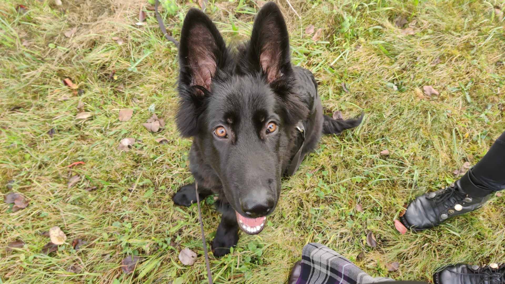
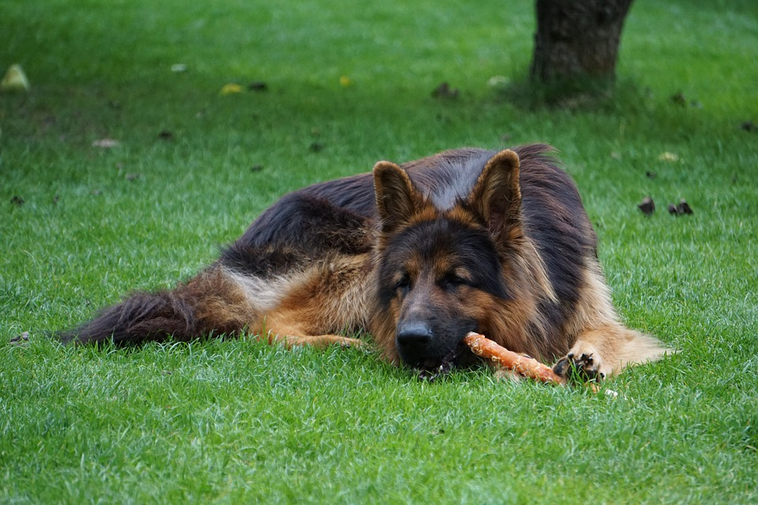
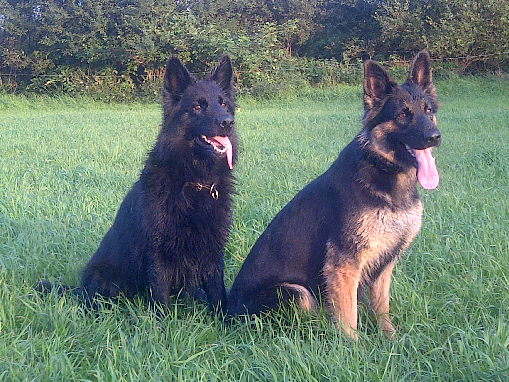

Je vais ici vous parler la santé de cette race de chien, qui présente aussi quelques problèmes récurrents aux grands chiens.
L’Altdeutsche Schäferhund, comme tout chien de grande race, peut être atteint de la dysplasie de la hanche et des coudes, l’handicapant grandement pour marcher. C’est une maladie parfois héréditaire, parfois « environnementale ». Les parents de votre futur chiot doivent être testés, leur dysplasie doit être contrôlée. Il y a 5 stades de dysplasie :
| Stade de dysplasie | Conséquences |
|---|---|
| Stade A | Aucun signe de dysplasie chez le chien, il n’est pas atteint par cela. Les hanches de votre chien sont parfaits. Tout va très bien donc |
| Stade B | Votre chien n’est toujours pas touché par dysplasie, mais ses hanches ne se sont pas aussi parfaitement formée que dans le stade A, leur angle n’est pas égal à 109° comme il le devrait, mais est supérieure ou égale à 105°. Il n’est pas indemne, mais presque |
| Stade C | Votre chien est touché d’une dysplasie très légère, ses hanches ont un angle compris entre 100 et 105 degrés, il n’a pas encore d’arthrose mais présente un début de subluxation au niveau de ses hanche |
| Stade D | Votre chien est touché d’une dysplasie moyenne, ses hanches ont un angle compris entre 90 et 100 degrés, et il présente de l’arthrose et une subluxation |
| Stade E | Votre chien est touché d’une dysplasie sévère, ses hanches ayant un angle inférieur à 90°, il présente une subluxation très importante et de nombreux signes d’arthrose |
Les parents de votre chien doivent donc être testé, et les accouplements devront être maîtrises. Un chien présentant une dysplasie C ne pourra s’accouple qu’avec un A, sinon, ses bébés seront forcément atteints. Deux chiens présentant une dysplasie A peuvent bien sûr s’accoupler, ainsi que deux chiens ayant une dysplasie B. Nous pourrons aussi faire s’accoupler des chiens avec une dysplasie A et B. Mais c’est tout. Un chien avec une dysplasie D ou E ne pourra donc jamais se reproduire, sinon ses chiots seraient forcément atteints
Ceci était donc la cause héréditaire, mais comme je vous l’ai dit précédemment, il y a aussi une cause environnementale
Si votre chien fait trop d’exercice trop jeune, si vous le faites trop se dépenser lorsqu’il est encore un chiot, les risques qu’il développera une dysplasie dans le futur n’en seront qu’accrus. Votre chiot ne devra jamais prendre l’escalier avant ses 6 mois, et une fois cet âge atteint, il devra le faire de manière très modérée car cela abîme fortement sa hanche. De même, si votre chien est en surpoids, ou bien que son alimentation n’a pas été adaptée lorsqu’il était chiot, il risquera aussi de développer une dysplasie. Ce sont donc les facteurs « environnementaux » de la dysplasie.
Les parents de votre futur chiot devront aussi être testés pour la myélopathie dégénérative ou radiculomyélopathie dégénérative, correspond à une dégénérescence progressive de la moelle épinière. Les premiers symptômes apparaissant vers ses 9 ans, il présentera tout d’abord des troubles de l'équilibre et une faiblesse des membres postérieurs, qui conduira à une paralysie des membres postérieurs, puis des quatre membres, amenant ainsi à votre chien des difficultés à s’alimenter, à aboyer, et même une incontinence urinaire et fécale. Vous l’aurez donc compris, cette maladie héréditaire est très handicapante, c’est pour cela qu’il est nécessaire de tester les chiens, pour éviter de les faire se reproduire s’ils en sont atteints.
Autrement, l’Altdeutsche Schäferhund est une race robuste, solide, ne présentant pas vraiment d’autres maladies.



Vous souhaitez revenir sur la page d'acceuil ? Cliquez ici
Vous pouvez aussi consulter cette page pour lire mes conseils sur la race
Et ici pour connaître son caractère